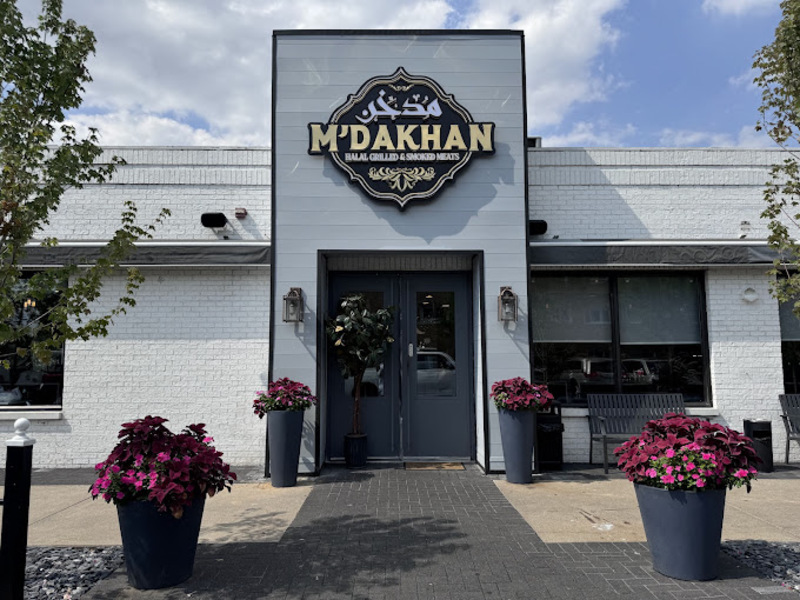
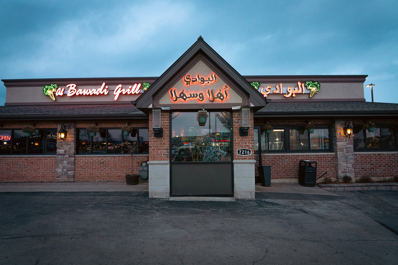
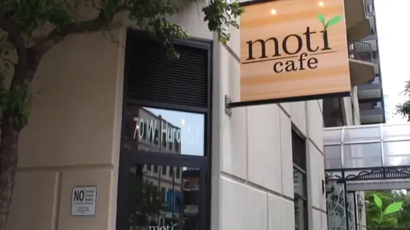
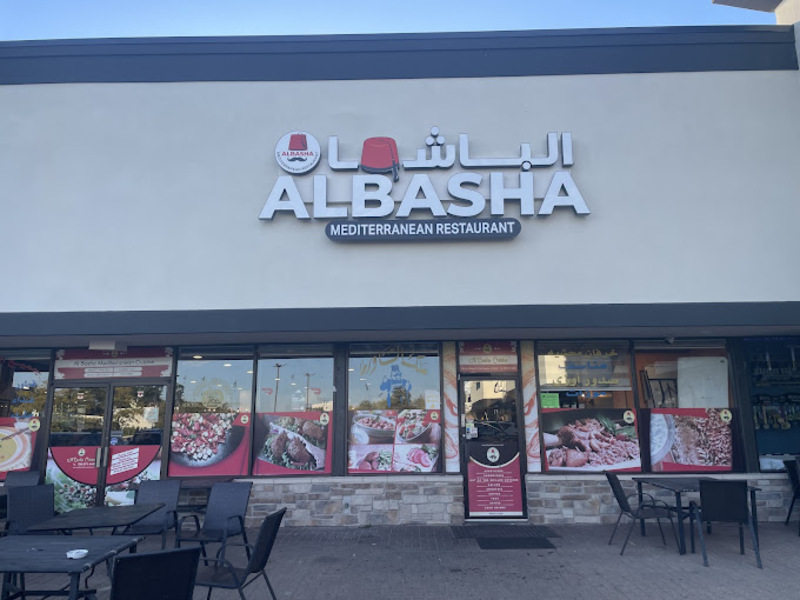

I decided to use this page to list my favorite restaurants. These are places I think have really good food.
Favorite Restaurants

Mdakhan: A Palestinian restaurant specializing in smoked food.

Bawadi: Bedouin-themed restaurant with traditional tents and Mensaf.

Moti Cafe: Known for great Indian street food. Tikka masala is a favorite.

Albasha: Jordanian cuisine with excellent hummus and shawarma.
My Favorite Dish
Maqluba: A delicious upside-down rice dish with chicken, eggplant, and potatoes.